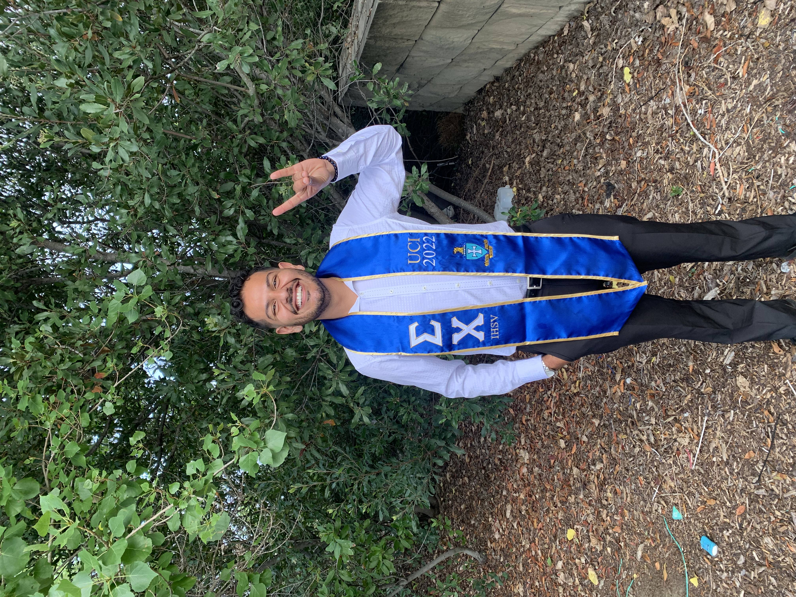
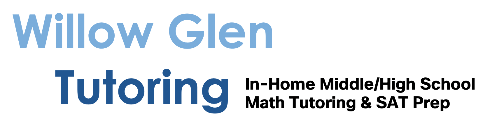
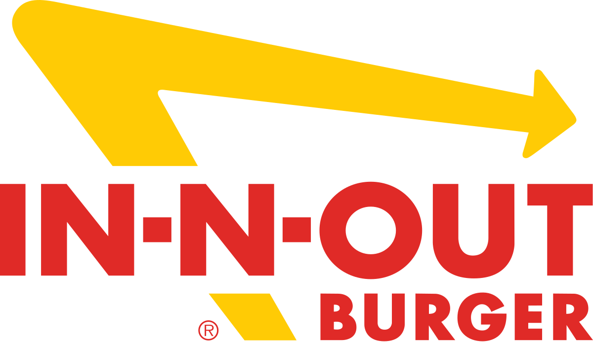
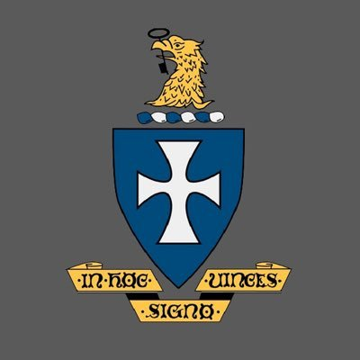
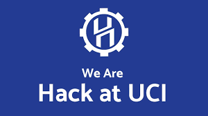

GT
August 2024 - Present
Georgia Institute of Technology
M.S. in Computer Science, Machine Learning
Current graduate student with a 3.83 GPA, focused on machine learning and applied systems work.

Dawoud MahmudExperience
My background combines Georgia Tech graduate study, customer-facing technical work, software QA, tutoring, service, and campus leadership. That mix is why forward-deployed engineering feels like the right next lane: close to users, close to implementation, and accountable for outcomes.
Current graduate student with a 3.83 GPA, focused on machine learning and applied systems work.
Built the foundation for software engineering, algorithms, systems thinking, and mathematical problem solving.
Resolve 20+ technical issues daily across hardware, software, accounts, devices, and workflows. Drove $84K+ in revenue by discovering business needs, recommending technical solutions, and onboarding 72+ small business clients.
Drove a 75% migration of a legacy shipping platform by documenting target architecture, validating workflows, and defining the next-phase technical roadmap. Executed 80+ user journey tests per sprint.

Helped students build confidence with math concepts through clear explanations, patient iteration, and personalized problem solving.

Developed discipline in high-volume operations, customer service, team communication, and consistency under pressure.
Leadership

2020 - 2022
Violence Intervention Prevention Chair, helping organize programming around safety, accountability, and community care.

2020
Front-end React developer for a campus hackathon experience, contributing to event-facing web work.